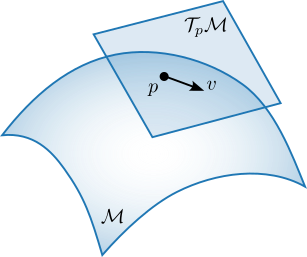

Riemannian Geometry#
This page defines the terms of Riemannian geometry that the rest of the documentation uses. Lee’s textbook covers the subject in full [1], and the books of Boumal and of Absil, Mahony and Sepulchre cover its computational side [2][3].
A smooth manifold \(\mathcal{M}\) is a space that looks like \(\mathbb{R}^n\) near each of its points. Each point \(p \in \mathcal{M}\) has a tangent space \(\mathcal{T}_p\mathcal{M}\), the vector space of the velocities of curves through \(p\). A tangent vector \(v \in \mathcal{T}_p\mathcal{M}\) is a direction of motion on the manifold.


A Riemannian metric \(g\) assigns every tangent space an inner product that varies smoothly with the point,
The metric defines lengths and angles on the manifold. The norm of a tangent vector \(v \in \mathcal{T}_p\mathcal{M}\) is
and the length of a curve is the integral of the norm of its velocity.
Geodesics generalize straight lines to manifolds. A geodesic \(\gamma\) has zero acceleration, and it is the shortest curve between any two of its points that lie close enough together.
The exponential map \(\exp_p : \mathcal{T}_p\mathcal{M} \to \mathcal{M}\) follows the geodesic that starts at \(p\) with initial velocity \(v\) for unit time,
The logarithmic map \(\log_p : \mathcal{M} \to \mathcal{T}_p\mathcal{M}\) is the local inverse of the exponential map. It returns the tangent vector at \(p\) that points toward \(q\),
The geodesic distance between two points is the length of the shortest curve between them. For \(q\) close enough to \(p\),
This formula needs the exponential and logarithmic maps of the metric in use. Under a
general metric, geodex’s distance evaluates the metric at the midpoint of the pair, a
third-order approximation [4], and discrete_geodesic computes the
geodesic itself (see Discrete Geodesic Interpolation).
A retraction \(R_p : \mathcal{T}_p\mathcal{M} \to \mathcal{M}\) maps a tangent vector to a point of the manifold and agrees with the exponential map to first order, \(R_p(0) = p\) and \(\mathrm{d}R_p(0) = \mathrm{id}\). A second-order retraction agrees with the exponential map to second order. Retractions are cheaper to evaluate than the exponential map. geodex keeps the retraction and the metric as separate policy types, as described in Concept Hierarchy and Architecture.